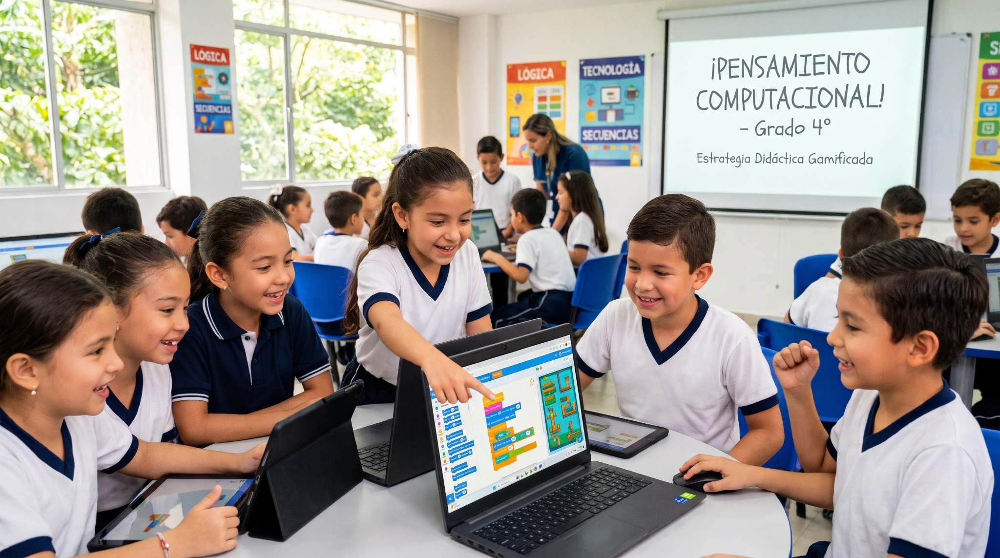
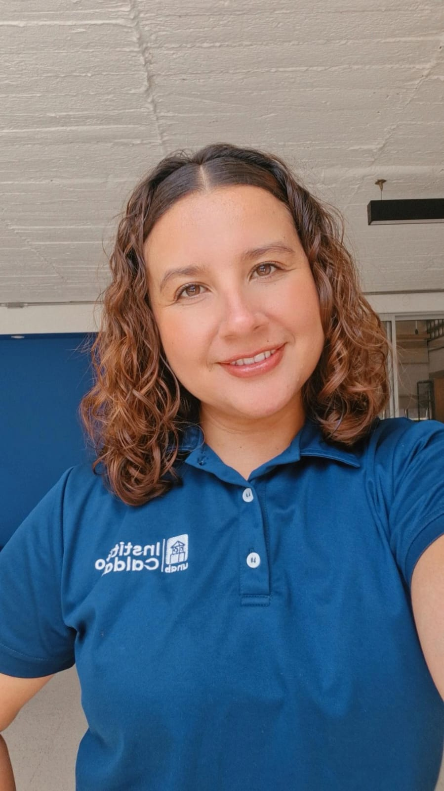
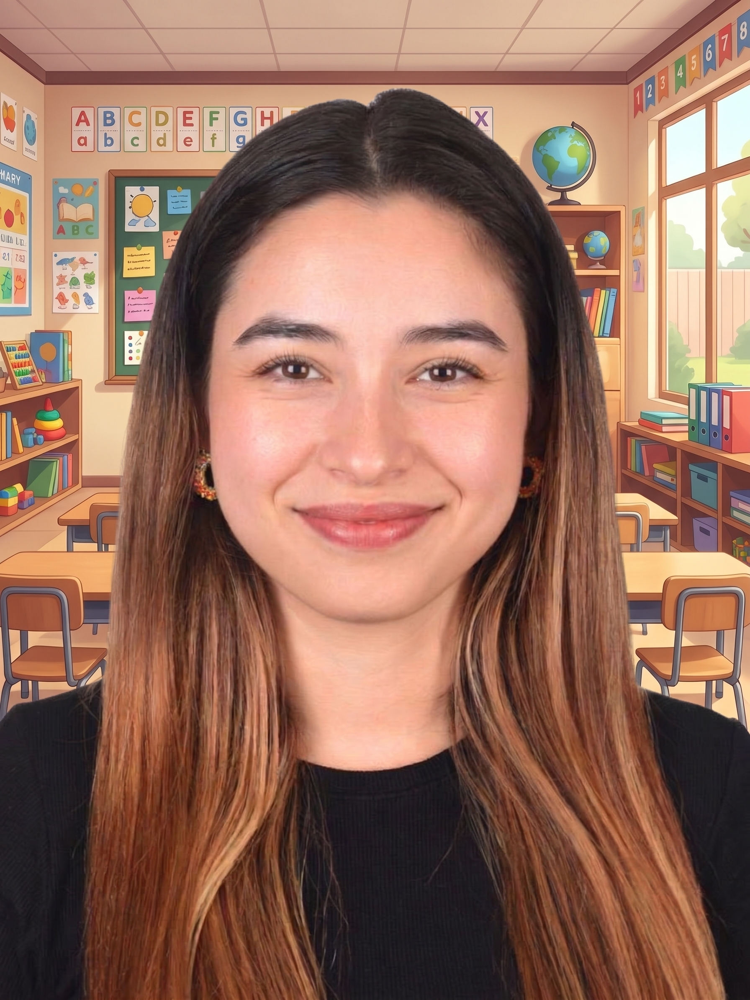
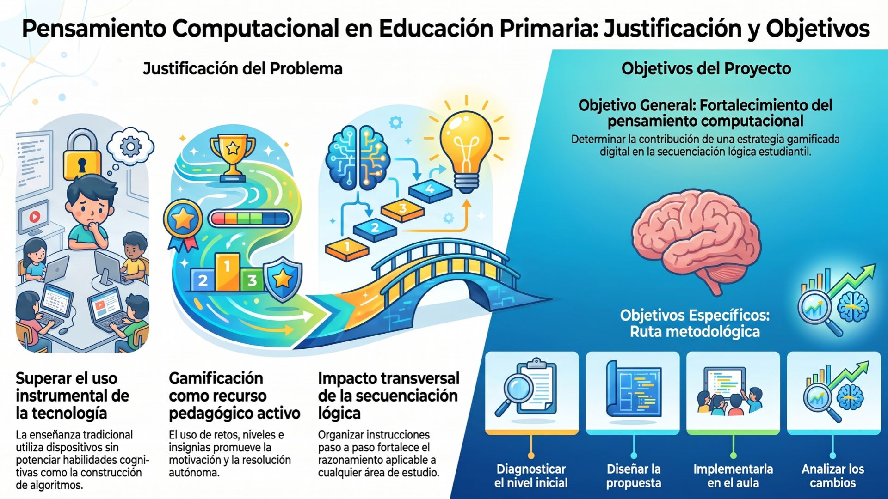

Docente
Aprender jugando. Pensar en secuencia.
Estrategia didáctica gamificada mediada por herramientas digitales para fortalecer las habilidades de secuenciación lógica en estudiantes de grado cuarto del Instituto Caldas de Bucaramanga.

Personas que hacen posible la idea
Una propuesta académica construida desde la colaboración, la investigación y el compromiso con el aprendizaje.
Docente
Docente
Autores de la investigación
Autora
Autora
Autor
Galería del equipo
Las fotografías del equipo aparecerán aquí en un carrusel. Usa las flechas para pasar de una imagen a otra.


01 · Identificación
Una estrategia didáctica gamificada que integra herramientas digitales para fortalecer las habilidades de secuenciación lógica del pensamiento computacional en estudiantes de grado cuarto.
assets/video/Video1.mp4Contexto, propósito y sentido de la estrategia didáctica.
assets/video/Video2.mp4Un segundo espacio audiovisual para ampliar la presentación.

Aquí irá tu imagen grande
Guárdala como Imagen4.jpg dentro de assets/img/
02 · Referenciación
Sección preparada para presentar los antecedentes, el marco conceptual y las referencias que fundamentan la estrategia didáctica. La completaremos con el contenido de tu documento.
Razonamiento, análisis y solución estructurada de problemas.
Organización de instrucciones en un orden coherente.
Retos, niveles y retroalimentación con intención pedagógica.
03 · Diseño
Aquí organizaremos la ruta de aprendizaje, las fases de intervención, las actividades gamificadas y las herramientas digitales utilizadas. El contenido se incorporará de forma gradual a partir del documento del proyecto.
Identificación y diagnóstico
Diseño de la estrategia
Implementación
Análisis y reflexión
Este espacio reunirá la secuencia de sesiones, los retos gamificados, los recursos digitales y las actividades dirigidas a fortalecer la secuenciación lógica en estudiantes de grado cuarto.
Reconocer el reto y ordenar instrucciones paso a paso.
Resolver desafíos con secuencias lógicas y herramientas digitales.
Comprobar soluciones, corregir el orden y comunicar resultados.
Contenido inicial de estructura. A medida que avancemos, reemplazaremos estas tarjetas por las actividades y herramientas exactas del proyecto.
La propuesta se organiza desde un proceso de investigación-acción con cuatro fases que orientan el diagnóstico, el diseño, la implementación y la reflexión sobre los cambios observados.
Reconocimiento del nivel inicial de las habilidades de secuenciación lógica.
Organización de la estrategia gamificada y selección de herramientas digitales.
Desarrollo de las actividades y registro de las experiencias de aprendizaje.
Revisión de los resultados iniciales y finales y de los cambios observados.
04 · Producto final
Este espacio queda reservado para presentar el producto final de la estrategia didáctica, los recursos interactivos y las evidencias de aprendizaje.
Video tutorial
En este espacio incorporaremos un video breve que explique cómo navegar por la página y encontrar las secciones de la propuesta. La estructura ya está preparada para añadir el archivo cuando esté disponible.
Cuando tengas el video, guárdalo como VideoTutorial.mp4 en assets/video/.
Esta propuesta académica se desarrolla en el marco de la Maestría en Recursos Digitales Aplicados a la Educación de la Universidad de Cartagena y se orienta al contexto de grado cuarto del Instituto Caldas de Bucaramanga.
Autores
Anyie Alexandra Hernández Hernández
Luis David Villamizar Portilla
Docentes
Nini Johana Villamizar Parada
Instituciones
Instituto Caldas · Bucaramanga
Sitio oficial de la universidad ↗Estamos preparando este espacio para presentar la información, los recursos y las evidencias de nuestro proyecto de una manera clara, interactiva y visualmente atractiva. Muy pronto encontrarás aquí nuevos contenidos.